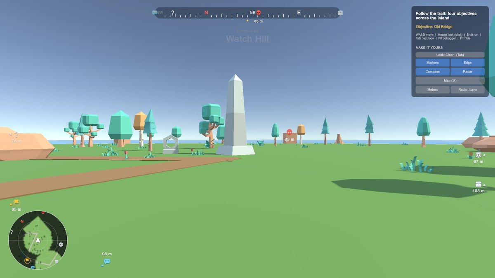
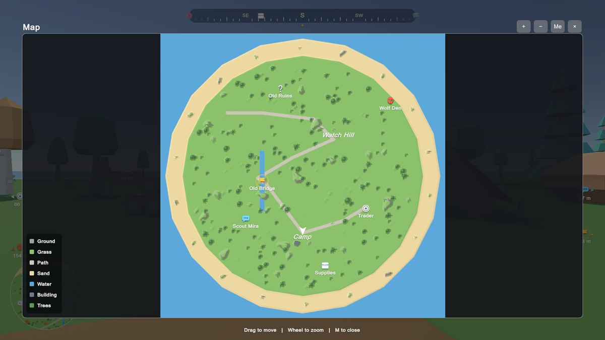
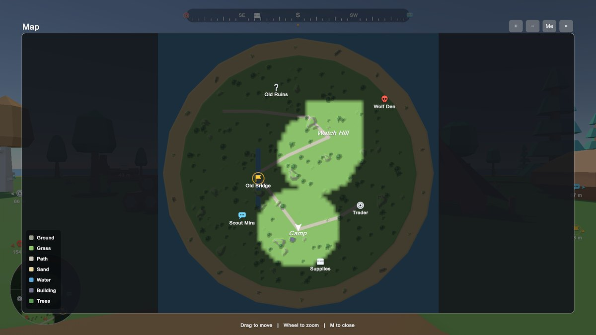
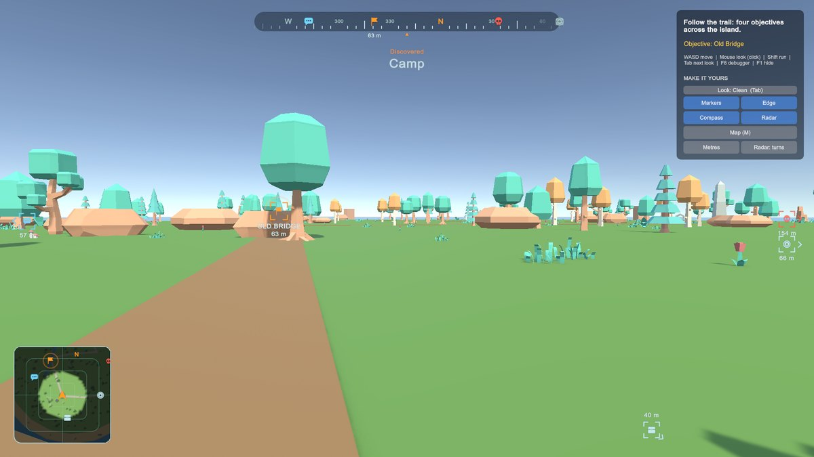
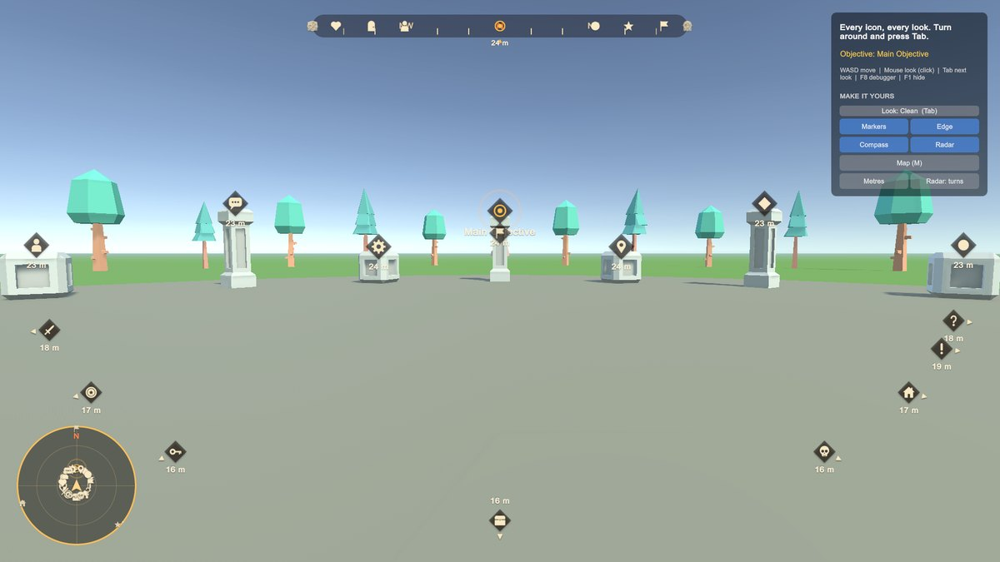

All In One Waypoint & Minimap Kit
Show players where to go. Add one Waypoint component to any object and players see a marker on screen, an arrow at the screen edge with the distance, an icon on the compass, a blip on the minimap and a pin on the full-screen map. Draw a clean map of your level in one click. No code needed.
- Unity 6000.0+
- Built-in, URP & HDRP
- No code needed
- Full C# source

How it works
Your first waypoint in three steps
-
Run the Setup Wizard
Tools > All In One Waypoint & Minimap Kit > Setup Wizardadds the HUD, finds your player and camera, and picks a look. -
Add a Waypoint
Put the Waypoint component on any object and pick an icon. It shows on screen, at the edge, on the compass and on the maps.
-
Make the map
Add a Waypoint Map, press Fit To Scene and Make Clean Map. Press Play, then M for the full-screen map.
Features
Everything that tells players where to go
One component
Waypoint- On-screen markers with the name and distance, and arrows at the screen edge when it's off screen or behind the player.
- Compass bar with marker icons, and a minimap that turns with the player or stays north-up.
- Objective trails, a current objective, reached events, groups and saving.
Map maker
- A clean map drawn from your level: roads, paths, grass, sand, water, rock, buildings and forest
- Reads meshes and Terrains, no camera
- Anything it can't recognise shows in pink, fixed in one click
- Or a photo from above, or your own picture
Full-screen map
- M opens it: drag, zoom, centre on the player
- Every waypoint with its name, and a legend
- Frees the mouse, and can pause the game
Fog of war and discovery
- The map is uncovered as players explore
- Named regions show a Discovered banner the first time players walk in
- Fog and discoveries save with one line
Make it yours
- Five looks: Clean, Tactical, Fantasy, Minimal and Arcade
- Your own icons, colours, shapes and fonts
- Save any look as your own style
Easy to fit into your game
Editor tools- Why Can't I See It? says in plain words why a waypoint isn't showing, and a scene check finds setup problems.
- Works with your game: first person, third person, top-down and 2D, both input systems, menus and pause screens.
- Light to run: one UI Toolkit HUD, no extra cameras and no garbage per frame.
Included demo scenes
Try it before you add it to your game
Three demos: a trail of objectives across an island with a clean map, fog of war and regions; a gallery of every icon and look; and a top-down 2D level.




Technical details
Built to be dependable
| Unity | 6000.0 or newer |
|---|---|
| Render pipelines | Built-in, URP and HDRP |
| Input | Input Manager (old) or the Input System package |
| Renderer | UI Toolkit (built into Unity): no shaders, no extra cameras |
| Source | Full C#, no native plugins, no other packages needed |
| Domain Reload off | Supported |
| Menu | Tools > All In One Waypoint & Minimap Kit |
Good to know
Limits, stated up front
- Maps are pictures made in the editor (or your own), not a live camera view: the player, waypoints and fog move live on them.
- The map maker reads names, materials and shapes; unusual levels may need a few one-click rules, or a photo from above.
- Damage direction indicators and floating health bars are not part of this kit.
Status
- The kit is in its final checks before submission to the Asset Store. Its documentation goes up here the day it launches.
Hear the day it launches
Join the Romano Assets Discord for launch news, or ask a question about the kit now.
Support
Help with the Waypoint & Minimap Kit
Stuck, found a bug or have an idea? Pick whichever is easiest. Every message gets an answer.
More from Romano Assets
Other kits, built to the same standard
All In One Prefab Builder Kit
Turn any pack of prefabs into a world-building kit: snap, draw roads, scatter, fence, dress streets, settle with physics and check your scene, all from one window.
All In One Save Kit
Save and restore player progress, world objects and settings, with slots, autosaves, a finished save menu, backups and automatic recovery from damaged saves.
All In One Interaction Kit
Turn your own prefabs into doors, drawers, switches, pickups, keypads and puzzles, with prompts for every controller, a "why can't I interact?" debugger and optional multiplayer.
All In One Runtime Building Kit
Let players build bases and place furniture at runtime: turn your own models into build pieces in about ten minutes without code, snap them together through sockets, drag out rows and areas or stamp whole buildings, and see a plain reason whenever a spot is refused. Four ready-made themes, and every part of the HUD, preview, words and sounds can be changed or switched off.
All In One Game Settings & Menu Kit
A finished game front end: title screen, main menu, settings, pause, loading screen and dialogs, with key rebinding, accessibility, subtitles and three themes, ready for keyboard, mouse and gamepad.